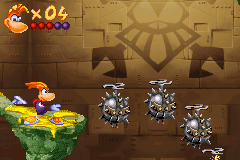
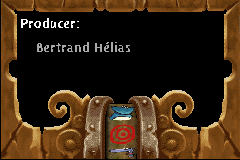
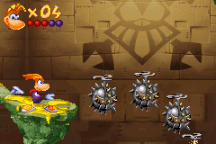
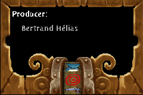

Rayman 3

Complete on 2018-05-19
3 / 5
Release Date: Mar 2, 2003
Meta Score: 83
Screenshots
 



Notes
Rayman 3 is the GBA adaptation of (unsurprisingly) the 3rd game in the Rayman series. The Rayman series hasn't had that many games but the one it has have been ported to every platform imaginable. Also on the GBA is Rayman Advance, a port of the original Rayman. Note there's no Rayman 2 on GBA.One theory I've seen online (unsourced) is that Rayman 3 GBA was originally intended to be Rayman 2, but had a thin skin of 3 slapped on for marketing reasons. Having played the game, I believe this whole heartedly. The plot and gameplay are that of Rayman 2, with the only noticable R3 elements being the hoodlums in a few levels (but less than R2's robot pirates, which are the most common enemies). But anyway, on to the review.
The plot is told through the classic GBA still images with text. Rayman's pal Globox has swallowed the evil dark lum and needs rescuing from Razorbeard, a robot pirate. It's not going to win any awards, but it keeps the game moving.
Gameplay is a 2D platformer, similar to the original Rayman. You start with most of the classic moves: throwing fists, helicopter hair. As the game progresses you get a few new moves like upgraded punches, limited hair flight and a down smash. The gameplay is reasonably good, but the graphics on platforms sometimes make it unclear where the edge is*.
The game is fairly short. There are 4 worlds, each with several levels. Each level has some unique gimmick which is good. But these gimmicks are not always that inspired (like several variants of moving platforms you have to ride) and some levels in the second half are very long with little variation. Bosses are typical "dodge attacks until a weak point appears" fare.
There are some minigame levels, water skiing and driving. These use the usual 3d graphics with 2 sprites superimposed and have the usual problems with unclear depth perception. Not too terrible though.
I'm not a big fan of the graphical style. Although it's more detailed than the original Rayman/Rayman Advance, it seems fuzzy and unclear at times. It's probably trying too hard to look like the home console version rather than develop a good art style for a 2D game.
Overall, Rayman 3 is a solid game but nothing stood out as really interesting or fun, but nothing was really bad either.